Weekly Goals
Week 10
- Start work on respeccing my scanner to fit my grammar specifications. At the least implement keyword recognition in the scanner.
- Get feedback from my midyear presentation and make a list of the 5 biggest goals I have on improving my presentation/presentational skills.
Week 11
- Continue respeccing scanner to fit my grammar specifications. Move on from keywords to implement single and double character recognition along with string and number recognition.
- Establish contact with my expert advisor and schedule the progress meeting for February.
Week 12
- Start learning about interpreters and begin work on the lox interpreter, try to have it evaluate simple math expressions.
- Finish respeccing the lox scanner to fit my grammar specifications. It should have all the functionality of the lox scanner.
- Create a rough draft of journal 4, adding all research for weeks 10, 11, and 12 (this week).
My Research and What I Learned
Because in the last journal I implemented the visitor design pattern, making the simple interpreting section of the language implementation is easy. Essentially I just have to implement new visitor methods and program the desired behavior, with some type checking - it’ll be much clearer in the accomplishments section. (Nystrom)
Accomplishments
Week 10
- After getting feedback from my midyear presentation, I made a list of the following 5 goals I have for improving my presentational skills.
- Talk slower on each slide, because I usually speed through them.
- Give time at the end of each educational slide for the information to settle, instead of speeding from slide to slide.
- Don’t look at the presenter notes screen, I should know what’s on each slide and know what I want to say about it.
- Completely memorize the first few minutes of my presentation so I can settle into the presentation without having a rough start.
- Make eye contact (or look just above their heads) with the audience, instead of staring at the screen or one specific person.
- I began respeccing my scanner to fit my grammar specification and design. I completed basic keyword recognition, token conversion, and the main loop.
- The image below shows the main loop of scanning tokens, it advances through the entire string of source code, and sets "start" and "current" breakpoints. At the end of every token it finds, it moves "start" to be at "current" and calls the method scanToken() which will advance "current" until it finds an acceptable token. At the end, it adds an "EOF" or "end of file" token, then displays the tokens. 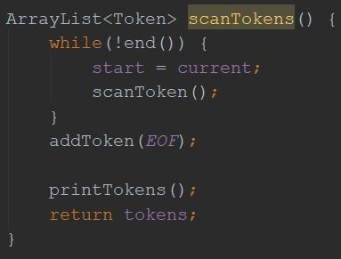
- This next image is the scanToken method, which tries to match any words found at the current position in the user's code, with known keywords in my language. If it does find any keywords, it converts them into tokens, same with numbers, strings, and variable identifiers. 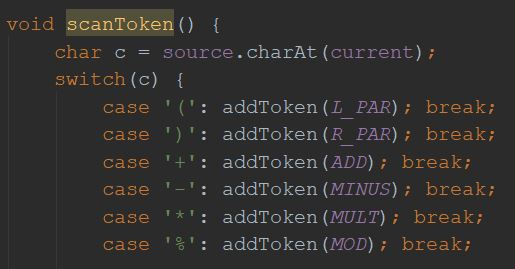
- The image below is a list of known multi-character keywords for the language. Whereas all the single and double character keywords are in the main scanToken method, this list holds anything longer, to be referenced by the scanToken method again later. 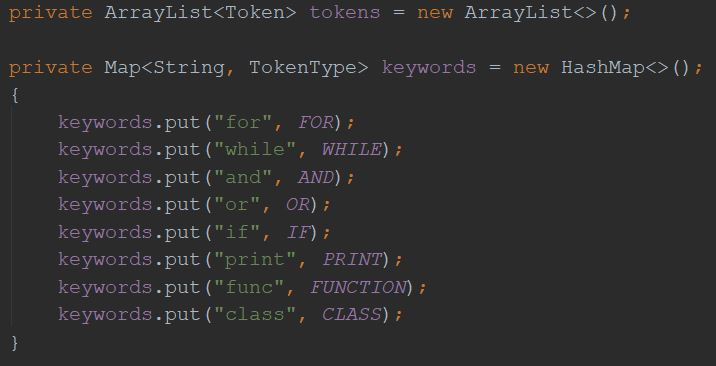
Week 11
- I scheduled my advisor meeting for 2/12 which will happen during week 13 of the project.
- I finished the basic scaner of minn this week, adding more complicated token recognition.
- The image below shows the code added to scanToken() in this revision of the scanner. It adds double character recognition for examples such as ">" or ">=" where the first character can be a token itself, or the beginning part of a different token. It also adds support for strings, whitespace, numbers, and more keywords. 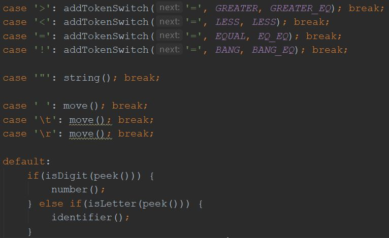
- This next image shows the helper methods for adding tokens. There are two versions of addToken(), one that only requires the type of the token, while the second can accept the type and value of the token. addTokenSwitch checks the next character in the code for examples like ">" vs ">=" and "=" vs "==" to either add the first token (only one character, something like ">") or the second token (two characters, ">="). 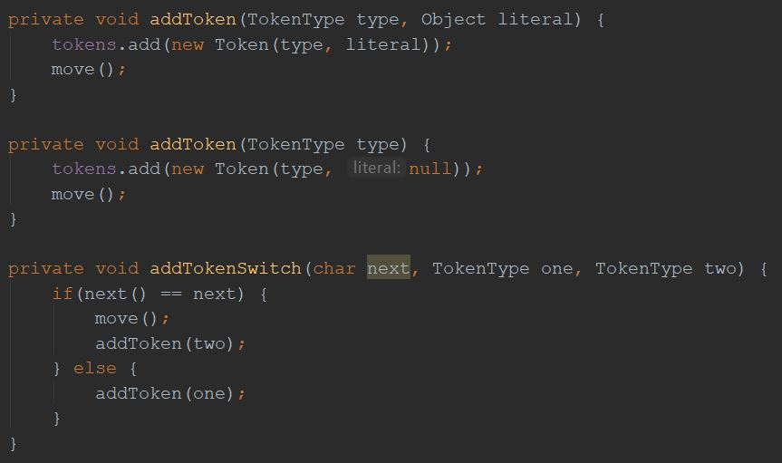
- These next helper methods are used to identify tokens that aren't known keywords. The number() method moves through the user's code and checks for any digits, when it runs out of digits it checks for a "." and all digits past that. Once the number in the user's code has been identified, the number method adds a new token with the NUMBER type, and the value of the number. The identifier() method will check if the current word is a multi-character keyword, then either add the correct keyword token, or add an IDENTIFIER (variable or function names) type token, with the value of the name. 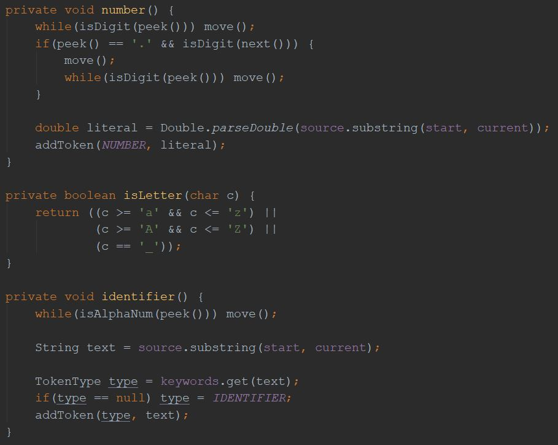
- Finally, these simple helper methods help the scanner traverse the user's code. The move() method advances the current position in the code by 1, only if there is still user code left to be scanned. The next() method returns the next character in the user's code, and the peek() method returns the character in the user's code at the current position. 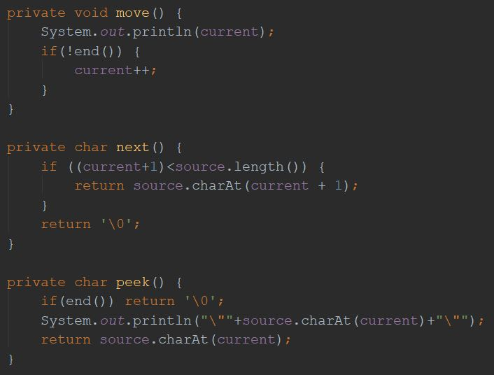
Week 12
- This week I learned about the final basic component, code evaluation, and built the code evaluation section with the tutorial on craftinginterpreters.
- This first image shows the core of the actual interpreter/code evaluation. If you recall from the visitor interpreter pattern that I talked about in journal 3, because of how the interpreter is structured, all I have to do is call expression.accept() and implement a method for each type of expression's "accept" method. The code below shows the method evaluate, which calls expression.accept(), along with the correct evaluatory methods for literals, grouping, and unary expressions. Literal expressions are evaluated by returning their literal value (number, string, or boolean). Grouping expressions are evaluated by evaluating everything inside of them first, this is consistent with math where everything inside parentheses is evaluated first. Finally, unary expressions either make a number negative, or invert the value of a boolean, depending on the type. 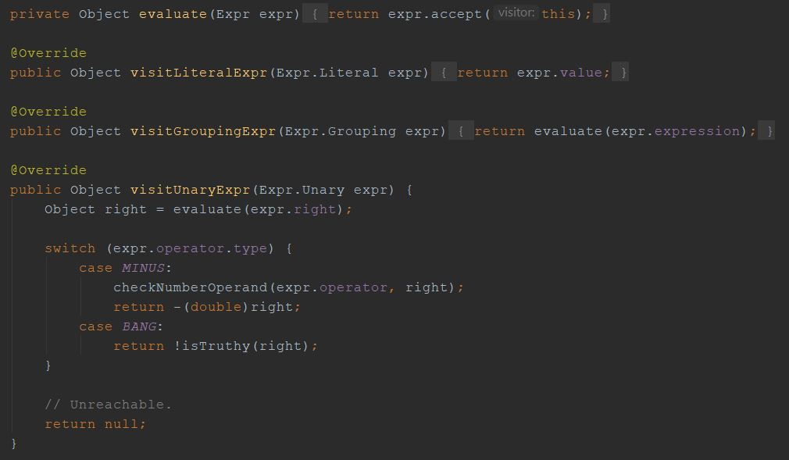
- This next image shows several helper methods for the methods in the first image. The checkNumberOperand and checkNumberOperands methods allow the code to be evaluated only if the objects passed are numbers, otherwise it reports an error that the operands must be numbers. The isTruthy method will be used to evaluate the truth of objects. The predetermined behavior in this language is: booleans can be true or false, null is false, everything else is true. 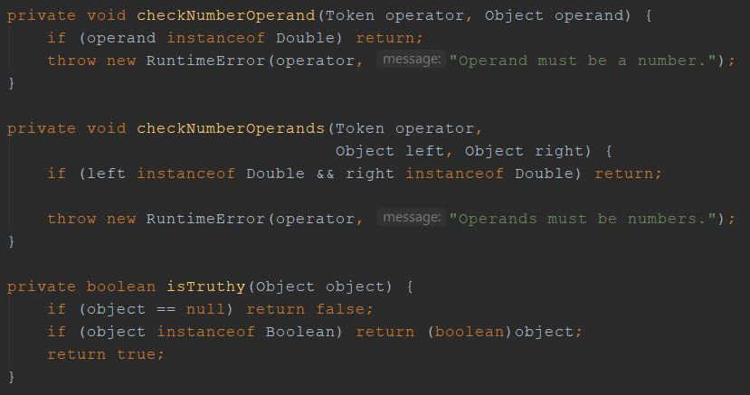
- This third image shows the evaluation method of the binary expression type. Binary expressions have one operand and two parameters, so they encompass comparisons and any simple math. This image shows the evaluations for all comparisons (==, !=, >, >=, <, <=) and checks that any operands for <, <=, >, or >= are numbers. 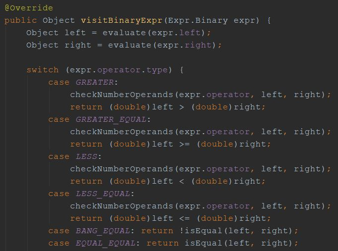
- This final image shows the second half of the evaluation method for binary expressions. Here, any mathematical expressions are evaluated, first checking that the operands are numbers, then performing the corresponding operation (either +, -, /, or *). Finally, if the binary expression that is being evaluated isn't valid, the method returns null. 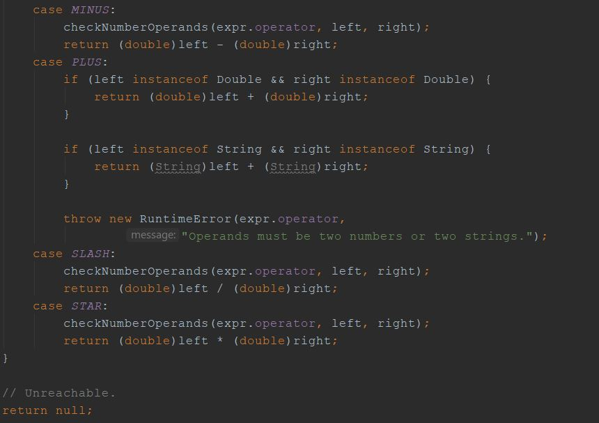
Reflection on Goals and Timeline
Goals
I've been meeting my goals really nicely these past few weeks. So far I've been on schedule but I'm slightly concerned about "crunch time" because there's still a lot of work to do with my project, as well as tests like the ACT and SAT coming up in my life, along with extracurriculars taking up time. I'm cautious to let my guard down about my schedule, and I want to get ahead to ensure that I can get all that I want done.
Timeline
Although I've been keeping up with my timeline, I'm concerned that I underestimated the amount of time certain aspects of my project will take this late into the year. I have several complicated topics that I scheduled little time for, and in reflection I doubt that I will get to classes or inheritance like I planned in my timeline. I would love to accomplish all that I set out to complete, but I care more about the quality of my project, and I spend a lot of time ensuring quality in my reports/website as well as the code I write. I'm hoping to pick up the pace and become more productive, but with everything happening in my life, I can't ensure that I'll hit my final goals or stretch goals like inheritance or classes. Overall, I just need to keep working and try to get as far as I can. I will have a lot to show for the project, but I do think it will be slightly less than my timeline predicted; I'm a little bit behind on my timeline.